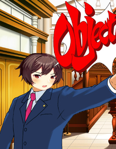

DDLC Ace Attorney
Yuri foi assassinada e Sayori é a principal suspeita. Defenda-a com todas as evidências que possui e faça uma reviravolta para solucionar este mistério!
⬇ Download
Yuri foi assassinada e Sayori é a principal suspeita. Defenda-a com todas as evidências que possui e faça uma reviravolta para solucionar este mistério!
⬇ Download